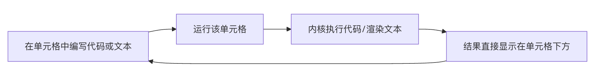

Jupyter Notebook 入門
Jupyter Notebook はオープンソースの Web アプリケーションです、ライブコード、数式、可視化チャート、説明テキストを含むドキュメントを作成・共有できます。
これは次のようなものと考えることができます。デジタル化された、対話型の実験ノート。
Jupyter という名前は、サポートする3つの主要言語に由来します：Julia、Python とR。
Jupyter は IPython Notebook から進化したもので、初期は Python のみをサポートしていましたが、後に多言語ツールへ拡張され、元のファイル形式を保持しています。.ipynb。
Jupyter はどのような問題を解決するのか？
- 探索的分析：データ分析や機械学習プロジェクトでは、さまざまなコード断片を試して、すぐに結果を確認したいことがよくあります。Notebook の対話性はそのために生まれました。
- 教育と学習：コード、コメント、図表、説明を完璧に組み合わせることができ、チュートリアルや自習ノートを作成するのに理想的なツールです。
- 再現可能な研究：分析プロセス全体（コード、データ、結果）が1つのファイルに保存されるため、他の人があなたの作業を完全に再現できます。
- 迅速なプロトタイピング：アイデアをすばやく組み立て、コードをセグメント単位でテストできます。スクリプト全体を実行する必要はありません。
コアなワークフロー図を通して、その対話的特性を理解しましょう：

上の図のように、これはシームレスな「書く → 実行 → 見る → 修正」のループです。このインターフェースから離れることなく、探索、デバッグ、記録のすべての作業を完了できます。
コンテンツをより魅力的でわかりやすくするために、次の方法を用います。シナリオ別比較、視覚的な類推和中核ロジックの抽出この教材コンテンツを最適化します。
なぜ Jupyter が必要なのか？
多くの初心者は疑問に思うでしょう：すでに PyCharm、Word、メモ帳があるのに、なぜ Jupyter Notebook をさらに学ぶ必要があるのか？
簡単な類推で理解できます：PyCharm が工場の生産ラインだとすれば、Jupyter Notebook は科学実験室の実験マニュアル。
主な利点の比較表
| 比較の観点 | 従来のコード（.py） | ドキュメントツール（Word/Markdown） | Jupyter Notebook (.ipynb) |
|---|---|---|---|
| 内容の構成 | コードのみ | テキストと静的画像のみ | コード + 実行結果 + 対話型チャート + ドキュメント説明 |
| 実行方法 | ファイル全体を最初から実行する必要がある | コードを実行できない | セグメント単位で実行：わからないところをクリックすればよく、中間結果は永続的に保持される |
| 使用シーン | 大規模プロジェクトの構築、プロジェクトのデプロイ | レポート作成、ノート記録 | データ分析、アルゴリズム実験、教学デモ、迅速なプロトタイピング |
Jupyter の三大利器
- 見たままのフィードバック：PyCharm では、出力を見るにはスクリプト全体を実行する必要があります。Jupyter では、1行書いて実行するだけです。実行結果（グラフも含む）はコードのすぐ下に直接表示されます。。
- 文芸的プログラミング：それはコードとドキュメントの境界を打ち破ります。ブログを書くように、2つのコードの間に優雅なレイアウトの説明を挿入でき、次の作成に非常に適しています。学習ノート或実験レポート。
- 軽量で低いハードル：複雑なプロジェクト設定（インタープリター、仮想環境、インデックスなど）を必要とする IDE と比べ、Jupyter はより軽量で、多数のフォルダーを作成せずに小さなアイデアをすばやく検証するのに最適です。
- キーと値のペアで、どの行がコードか、どの行がテキストか、コードがどのようなグラフを出力したかを記録しています。
- 利点：これは、非常に強い移植性を持つことを意味します。GitHub で簡単に共有したり、PDF や HTML に変換したりできます。
- コアコンポーネント：統合したIPython（拡張対話型 Python）、ØMQ（効率的なメッセージキュー）とTornado（高性能 Web サーバー）。
- 多言語サポート（カーネル）：カーネルとは何か？カーネルは、コードの実行、補完、検査を担当する独立したプログラムです。
- 分離設計（デカップリング）：カーネルは特定のドキュメントに依存せず、ローカルで実行することも、リモートサーバーにデプロイすることもできます。
- 万能な拡張性：現在、Python、R、Julia、Haskell を含む100以上のプログラミング言語をサポートしています（その名前はJu-Py-Terまさに Julia、Python、R に由来しています）。
- nbconvert（エクスポートの神ツール）：スイスアーミーナイフのように、Notebook を PDF、HTML、Markdown、さらにはスライド（Reveal.js）や LaTeX に変換します。
- nbviewer（オンラインプレビュー）：これは Web ベースのサービスであり、公開された Notebook の URL を与えるだけで、受信者が何もインストールしなくても、それを美しい Web ページに動的にレンダリングします。
- クラウドネイティブサポート：ほぼすべての主要クラウドベンダーがJupyterをAIプラットフォームのフロントエンドとして採用しています。
- Google Colab：無料のクラウドJupyter環境で、Google Driveと深く統合され、GPUサポートを提供します。
- Amazon SageMaker：機械学習モデルの構築、トレーニング、デプロイに使用されます。
- MS Azure Notebooks：Microsoftが提供するクラウドコラボレーション環境。
.ipynb ファイルとは？
Jupyter をより深く理解するには、次の本質を見抜く必要があります。.ipynbファイルの本質。
1. 本質は JSON（データ交換形式）
画面上では美しいインターフェースが見えますが、メモ帳で無理やり開くと.ipynbファイルを開くと、それが実際には構造化された JSON テキストであることがわかります。。
2. レンダリング：文字化けから芸術作品への過程
.ipynbファイル自体は単なる原材料であり、次のものが必要です。レンダリングエンジン（Jupyter Notebook ソフトウェア、VS Code プラグイン、GitHub プレビューアなど）がそれを私たちが慣れ親しんだ対話型インターフェースに変換します。
💡 深い洞察：
想像してみてください。.ipynbそれはまるで楽譜のようなものです。（JSON ソースコード）であり、Jupyter ソフトウェアはピアノです。楽譜自体は音を出すことはできませんが、ピアノがあれば、誰の手であっても美しい旋律（コードロジックと可視化結果）を奏でることができます。
Jupyter の技術アーキテクチャとエコシステム
Jupyter は単なるコードを書くためのウィンドウではなく、複数のコアコンポーネントから構成される強力なエコシステムです。
1. 技術アーキテクチャ：REPL から多言語カーネルへ
Jupyter の核心は対話型計算モデルです。ブラウザベースで提供されるREPL（読み取り-評価-出力ループ（REPL））であり、その基盤は以下のハードコアな技術によって支えられています。
2. ファイル変換と可視化（nbconvert & nbviewer）
Jupyter ドキュメント（.ipynb）の本質はJSON 形式であり、「Jupyter をインストールしていなければ閲覧できない」という制限を打破するために、エコシステムは二つの強力なツールを提供しています。
3. Notebook からエコシステムのフルセットへ
プロジェクトの進化に伴い、Jupyter は単一のツールから、さまざまな規模のニーズに応える製品ラインへと進化しました：
| 段階/ツール | 位置づけと特徴 | 適用シーン |
|---|---|---|
| Jupyter Notebook | クラシックなスタンドアロン版で、シンプルなセル操作。 | 個人ノート、迅速なプロトタイピング、教学デモ。 |
| JupyterLab | 次世代 UI。ターミナル、ファイルブラウザ、テキストエディタを統合し、マルチウィンドウレイアウトをサポートします。 | 本番開発、マルチタスクのデータサイエンスワークフロー。 |
| JupyterHub | マルチユーザー管理プラットフォーム。複数の独立したNotebook環境の生成と管理をサポートします。 | 企業チームのコラボレーション、大学のコース実験プラットフォーム。 |
4. クラウドと業界応用：ビッグデータ時代の入場券
Jupyterの対話型パラダイムは、科学研究と工学の分野を大きく変えてきました。2018年以降、その人気は伝統的なツールであるMathematicaをも上回りました。
その他の拡張機能💡 歴史の豆知識：
Jupyterの前身は2011年に誕生したIPython Notebook。2015年になって、多言語サポートを示すために、正式にJupyterと改名されました。このノートブック式の対話の着想は、1980年代のMathematicaにまで遡ることができます。
クリックしてノートを共有
<p style="font-size:14px;">ノートはこの記事の内容を拡張したものである必要があります！</p><br> <p style="font-size:12px;"><a href="../tougao.html" target="_blank">記事の投稿は、こちらをクリック</a></p> <p style="font-size:14px;"><a href="../w3cnote/runoob-user-test-intro.html" target="_blank">登録招待コードの取得方法</a></p> <h3 class="text-muted"><i class="fa fa-info-circle" aria-hidden="true"></i> ノートを共有する前に必ず<a href=";.html" class="runoob-pop">ログイン</a>！</h3> <p><a href="../w3cnote/runoob-user-test-intro.html" target="_blank">登録招待コードの取得方法</a></p>